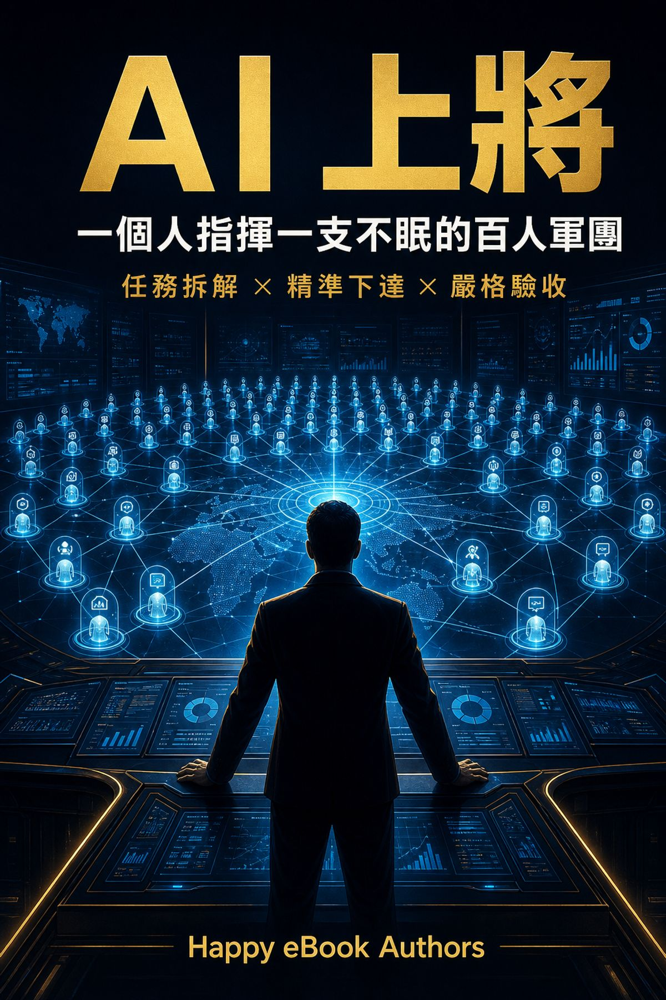

電子書
AI 上將：一個人指揮一支不眠的百人軍團
你的 AI 越聰明，你就越累

AI 上將：一個人指揮一支不眠的百人軍團
你的 AI 越聰明，你就越累
你的 AI 越聰明，你就越累。 十個、五十個、一百個不眠不休的 AI 助手同時等你下命令——但你被它們的輸出淹沒，只好親自一行一行修正。你沒有變成指揮官，你變成了整支軍團唯一的監工。 這不是 AI 的問題，是「指揮」的問題。 《AI 上將》不教你寫提示詞，而是教你一套與任何 AI 都通用的指揮方法：任務拆解 × 精準下達 × 嚴格驗收。把模糊目標拆成可驗證的子任務、用 AI 聽得懂的話下達任務書、用證據取代感覺進行驗收——讓它第一次就做對，而不是做十次讓你擦屁股。 20 章實戰方法＋5 大工具模板，從單一任務到並行軍團，從救火到防火，一步步把你訓練成「一個人指揮百人軍團」的上將。 適合：想用 AI 大幅提升產出、卻苦於它總做錯的工程師、產品經理與自由工作者。工具會換，方法不會——這套方法十年後依然有效